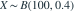
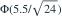
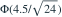
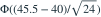

。采用连续性修正， 的正态近似是哪项？其中 为标准正态分布函数。- A

- B
- C

- D
我已思考，展开答案与解析
正确答案：A
- 均值为 ，方差为 。事件 用连续边界 近似。
- 故近似为

。
易错提醒包含整数 45 时，应使用右侧半格边界。
数学三·概率统计基础专题 · 数学三概率统计基础专题·原创第29题
按数学三常见概率统计知识点原创；不是历年真题或教材原题。

。采用连续性修正， 的正态近似是哪项？其中 为标准正态分布函数。


。数学三·概率统计基础专题 · 数学三概率统计基础专题·原创第29题
按数学三常见概率统计知识点原创；不是历年真题或教材原题。